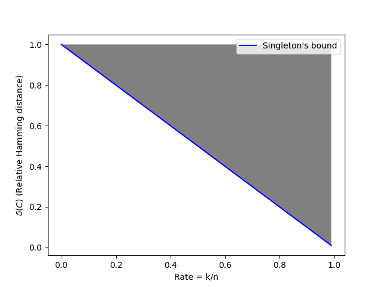

En esta entrada documentaré el contenido visto en Algorithmic Higlights of Coding Theory, organizado por el CRM.
Día 1
Comencemos repasando las bases de la teoría de códigos:
Tenemos como elementos básicos $ \Sigma $ el alfabeto del que se compone nuestro mensaje.
Definición de distancia absoluta de Hamming: Sea $v, \hat{v} \in \Sigma^n \quad \Delta (v, \hat{v}) = \# \{\ i \ | \ v_i \neq \hat{v}_i\}$
Definición de distancia relativa de Hamming: $\delta (v, \hat{v}) = \frac{\Delta(v, \hat{v})}{n} \text{ en donde } \delta(v, w) \in [0, 1] \ \forall v,w \in \Sigma^n$
Arquitectura de la comunicación:
Definimos el ratio como $Rate \triangleq \frac{k}{n}$ y contamos con dos nuevas funciones, una de codificación y decodificación respectivamente:
Definición de función de codificación y decodificación: $E: \Sigma^n \to \Sigma^k \quad D: \Sigma^k \to \Sigma^n$ Definición de capacidad de un canal: Máximo ratio tal que cuando $k, n \to \infty \ \exists E, D$ tal que $Pr[m= \hat{m}] = 1-o_n(1)$
Teorema de ruido de Shannon:
$$Capacidad(BSC(p)) \geq 1-h(p) \text{ en donde h(p) es la entropia y se define como } h(p) = p\log_2 (\frac{1}{p}) + (1-p) \log_2 (\frac{1}{1-p})$$
Definiremos la distancia de Hamming para un código como $\Delta(C) = \min\limits_{x,y \in C \ x \neq y} \{ \Delta(x, y)\} \ $ en donde $ \ C = Im(E) \triangleq \{ E(n) | m \in \Sigma^k\} \subseteq \Sigma^n$
A partir de esta definición podemos empezar a decir si los códigos son buenos para un canal, por ejemplo si tenemos un código $C$ tal que $\Delta(C) \leq 2e$ en donde $e$ es el máximo número de errores que podrá realizar un canal, entonces existe una pareja $v, w \in \Sigma^n$ tal que si el canal ha intercambiado $e$ de las coordenadas que tenían diferentes seremos incapaces de de determinar si se trataba de $v$ o $w$.
También podemos definir la distancia relativa de Hamming para el código como $\delta(C) = \frac{\Delta(C)}{n}$.
A partir de ahora intentaremos maximizar $\delta(C)$ dado un ratio. Como el ratio y la capacidad son funciones que variarán entre 0 y 1 podemos representarlo con un gráfico.
Cota de Singleton
Ahora demostraremos la cota de Singleton que dividirá por la mitad la gráfica anterior de forma que nos quedan estas posibilidades: Demostración 1
$$\text{Supongamos una función de codificación cualquiera } E: \Sigma^k \to \Sigma^n \text{ y consideremos la proyección de las primeras } k-1 \text{ coordenadas.}$$ $$\pi \circ E: \Sigma^k \to \Sigma^{k-1} \text{ por lo tanto } \exists \ m_1 \neq m_2 \text{ tal que } \pi(E(m_1)) = \pi(E(m_2))$$ $$ \Delta(m1, m2) \leq n-k+1 \text{ y por lo tanto } \delta(C) \leq 1-\frac{k}{n}+\frac{1}{n} \text{ donde } \frac{k}{n} = \text{Ratio}$$ Para este resultado estamos asumiento en todo momento que el alfabeto está acotado.
Códigos de Reed-Solomon(1960)
Sea $\Sigma = F_q$ donde $F_q$ representa un campo finito con $q$ elementos. Entonces podemos representar un mensaje como $m = (m_0, ..., m_{k-1}), \ m(x) \cong \sum\limits_{i = 0}^{k-1} m_i x^i$.Fijamos $\alpha_1, \alpha_2, ..., \alpha_n \in F_q$ distintos entre sí. Enviaremos a través del canal la tupla $<m(\alpha_1), m(\alpha_2), ..., m(\alpha_n)> \in F_q^n$.
Veamos que $\Delta(RS \ Code) \geq n-k+1$. Sea $m_1$ y $m_2$ los dos mensajes que minimizan la distancia de Hamming del código de Reed-Solomon. Definimos el polinomio $P(x) = (m1-m2)(x) = \sum\limits_{i=0}^{k-1}(m_{1,i}-m_{2,i})x^i$. Dado que $m_1 \neq m_2$ sabemos que $P(x)$ no es nulo con un grado $\leq k-1$. Esto implica que $\# \{i \ | \ P(\alpha_i) = 0\} \leq k-1$, ($P(x)$ puede tener hasta $k-1$ raices que en el peor de los casos serán los parámetros que habremos fijado). Esto implica que $\Delta(m_1, m_2) \geq n-(k-1) = n-k+1$.
Hemos encontrado una función de codificación que iguala la cota de Singleton, es el momento de pensar en como descifrar el mensaje una vez hayan ocurrido los errores.
Problema de decodificación de Reed-Solomon
Dados: $F_q, n, k, e = \#$errores, $\alpha_1, \alpha_2, ..., \alpha_n \in F_q$ y distintos y la tupla $<y_1, y_2, ..., y_n> \in F_q^n$.Tarea: Encontrar TODOS los polinomios tal que $\# \{ i \ | \ m(\alpha_i) \neq y-i\} \leq e$.